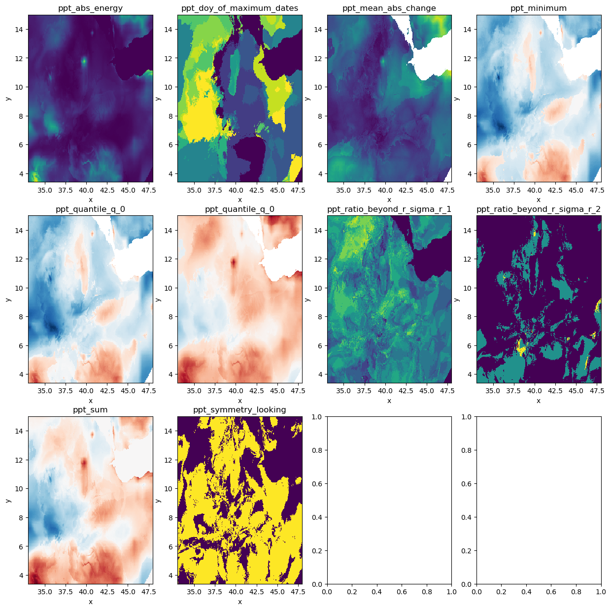

Classification of raster timeseries with xr_fresh, geowombat and sklearn
import geowombat as gw
import os
from datetime import datetime
import matplotlib.pyplot as plt
import pandas as pd
from glob import glob
import tempfile
from pathlib import Path
from xr_fresh.feature_calculator_series import (
minimum,
abs_energy,
mean_abs_change,
ratio_beyond_r_sigma,
symmetry_looking,
sum,
quantile,
function_mapping,
)
# make temp directory for outputs
temp_dir = Path(tempfile.mkdtemp())
# Set up error logging
import logging
# set up error logging
logging.basicConfig(
filename=os.path.join(temp_dir, "error_log.log"),
level=logging.ERROR,
format="%(asctime)s:%(levelname)s:%(message)s",
)
# Read in example data
os.chdir("../../xr_fresh/data/")
band_name = "ppt" # used to rename outputs
file_glob = f"pdsi*tif"
strp_glob = f"pdsi_%Y%m_4500m.tif"
dates = sorted(
datetime.strptime(string, strp_glob) for string in sorted(glob(file_glob))
)
files = sorted(glob(file_glob))
# print dates and files in a table
pd.DataFrame({"date": dates, "file": files})
/home/mmann1123/miniconda3/envs/xr_fresh_update/lib/python3.9/site-packages/tqdm/auto.py:21: TqdmWarning: IProgress not found. Please update jupyter and ipywidgets. See https://ipywidgets.readthedocs.io/en/stable/user_install.html
from .autonotebook import tqdm as notebook_tqdm
| date | file | |
|---|---|---|
| 0 | 2018-01-01 | pdsi_201801_4500m.tif |
| 1 | 2018-02-01 | pdsi_201802_4500m.tif |
| 2 | 2018-03-01 | pdsi_201803_4500m.tif |
| 3 | 2018-04-01 | pdsi_201804_4500m.tif |
| 4 | 2018-05-01 | pdsi_201805_4500m.tif |
| 5 | 2018-06-01 | pdsi_201806_4500m.tif |
| 6 | 2018-07-01 | pdsi_201807_4500m.tif |
| 7 | 2018-08-01 | pdsi_201808_4500m.tif |
| 8 | 2018-09-01 | pdsi_201809_4500m.tif |
| 9 | 2018-10-01 | pdsi_201810_4500m.tif |
| 10 | 2018-11-01 | pdsi_201811_4500m.tif |
| 11 | 2018-12-01 | pdsi_201812_4500m.tif |
from xr_fresh.extractors_series import extract_features_series
# Define the feature dictionary
feature_dict = {
"minimum": [{}],
"abs_energy": [{}],
"doy_of_maximum": [{"dates": dates}],
"mean_abs_change": [{}],
"ratio_beyond_r_sigma": [{"r": 1}, {"r": 2}],
"symmetry_looking": [{}],
"sum": [{}],
"quantile": [{"q": 0.05}, {"q": 0.95}],
}
# Define the band name and output directory
band_name = "ppt"
# Extract features from the geospatial time series
extract_features_series(
files, feature_dict, band_name, temp_dir, num_workers=12, nodata=-9999
)
100%|██████████| 4/4 [00:00<00:00, 86.77it/s]
100%|██████████| 4/4 [00:00<00:00, 59.55it/s]
100%|██████████| 4/4 [00:00<00:00, 18.64it/s]
100%|██████████| 4/4 [00:00<00:00, 32.75it/s]
100%|██████████| 4/4 [00:00<00:00, 11.07it/s]
100%|██████████| 4/4 [00:00<00:00, 3359.47it/s]
100%|██████████| 4/4 [00:00<00:00, 13.08it/s]
100%|██████████| 4/4 [00:00<00:00, 7182.03it/s]
100%|██████████| 4/4 [00:00<00:00, 64.93it/s]
100%|██████████| 4/4 [00:00<00:00, 5087.09it/s]
features = sorted(glob(os.path.join(temp_dir, "*.tif")))
feature_names = [os.path.basename(f).split(".")[0] for f in features]
pd.DataFrame({"feature": feature_names, "file": features})
| feature | file | |
|---|---|---|
| 0 | ppt_abs_energy | /tmp/tmpupau0mxr/ppt_abs_energy.tif |
| 1 | ppt_doy_of_maximum_dates | /tmp/tmpupau0mxr/ppt_doy_of_maximum_dates.tif |
| 2 | ppt_mean_abs_change | /tmp/tmpupau0mxr/ppt_mean_abs_change.tif |
| 3 | ppt_minimum | /tmp/tmpupau0mxr/ppt_minimum.tif |
| 4 | ppt_quantile_q_0 | /tmp/tmpupau0mxr/ppt_quantile_q_0.05.tif |
| 5 | ppt_quantile_q_0 | /tmp/tmpupau0mxr/ppt_quantile_q_0.95.tif |
| 6 | ppt_ratio_beyond_r_sigma_r_1 | /tmp/tmpupau0mxr/ppt_ratio_beyond_r_sigma_r_1.tif |
| 7 | ppt_ratio_beyond_r_sigma_r_2 | /tmp/tmpupau0mxr/ppt_ratio_beyond_r_sigma_r_2.tif |
| 8 | ppt_sum | /tmp/tmpupau0mxr/ppt_sum.tif |
| 9 | ppt_symmetry_looking | /tmp/tmpupau0mxr/ppt_symmetry_looking.tif |
# plot the features in 3x3 grid
fig, axes = plt.subplots(3, 4, figsize=(15, 15))
axes = axes.flatten()
for i, feature in enumerate(features):
with gw.open(feature) as src:
src.plot(ax=axes[i], add_colorbar=False)
axes[i].set_title(feature_names[i])
# src.plot(robust=True)
# plt.title(feature_names)
# plt.show()

Create a unsupervised classification of timeseries features
In this example we will create a non-sense classification. The goal is to show how to use xr_fresh to create a timeseries feature dataset and then use geowombat to classify the dataset using sklearn.
Notice the use of SimpleImputer to fill missing values to learn more about this see the pygis.io tutorial
Note: You will need to install some additional features for geowombat by running
mamba install geowombat-ml -c conda-forge
from sklearn.cluster import KMeans
from sklearn.pipeline import Pipeline
from geowombat.ml import fit_predict
from sklearn.impute import SimpleImputer
import numpy as np
cl = Pipeline(
[
("remove_nan", SimpleImputer(missing_values=np.nan, strategy="mean")),
("clf", KMeans(n_clusters=6, random_state=0)),
]
)
# fit the pipeline and plot
with gw.open(features, stack_dim="band", nodata=-9999) as src:
display(src)
y = fit_predict(src, cl)
y.plot(robust=True)
<xarray.DataArray (band: 10, y: 287, x: 371)>
dask.array<concatenate, shape=(10, 287, 371), dtype=float64, chunksize=(1, 256, 256), chunktype=numpy.ndarray>
Coordinates:
* band (band) int64 1 1 1 1 1 1 1 1 1 1
* x (x) float64 33.01 33.05 33.09 33.13 ... 47.84 47.88 47.92 47.96
* y (y) float64 14.98 14.94 14.9 14.86 ... 3.537 3.497 3.456 3.416
Attributes: (12/13)
transform: (0.040424187785378464, 0.0, 32.98613723286883, 0.0, ...
crs: 4326
res: (0.040424187785378464, 0.040424187785378464)
is_tiled: 0
nodatavals: (-9999,)
_FillValue: -9999
... ...
offsets: (0.0,)
filename: ['ppt_abs_energy.tif', 'ppt_doy_of_maximum_dates.tif...
resampling: nearest
AREA_OR_POINT: Area
_data_are_separate: 1
_data_are_stacked: 1# remove files from temp directory
import shutil
shutil.rmtree(temp_dir)